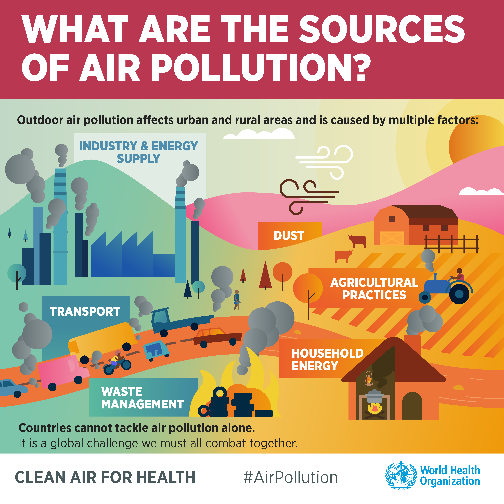

Air Pollution and COVID-19
In a hurry? Download the website's factsheet with the key insights and sources here.
It was a big mystery in spring 2020: why were so many people in Bergamo, New York and other regions getting badly sick with COVID-19, but not in other regions? Why did the incidence rate shoot up in one place like Brussels, but stayed low in an otherwise very comparable city like Amsterdam?
Since spring, the variance in how COVID-19 is shaping up in different places has consolidated. Some factors that explain this variance have been known very early into the pandemic: The age distribution of populations, mobility, population density or medical preconditions such as diabetes or obesity. And not least, public health measures like social distancing, quarantines or contact bans.
Medical professionals and scientists soon started researching whether there are also contributing environmental factors that cause COVID19 to spread faster or pose a higher risk to specific populations. New research coming out of that effort in 2020 indicates that air pollution could be key. By now, there are a host of academic studies from all over the world corroborating this theory.
Both short- and long-term exposure to high levels of air pollution can cause a whole variety of adverse health outcomes. It could mean that residents - without knowing it - have pre-damaged lungs or blood vessels, a higher risk for a severe course of the disease. The following video by the World Health organisation explains the medical basics about why air pollution can be an underlying risk factor for COVID-19.
Air pollution refers to the release of pollutants into the air that are detrimental to human health and the health of other animals. The WHO estimates that around 7 million people die every year from exposure to polluted air. Ambient air pollution alone caused some 4.2 million deaths in 2016, whilst household air pollution, e.g. from cooking with pollution fuels indoors caused an estimated 3.8 million deaths in the same period.

Many different substances are summarised under the term air pollution. The most important ones are particulate matter (PM), ground-level ozone, nitrogen oxides, sulfur oxides, volatile organic compounds and polycyclic aromatic hydrocarbon. A large fraction of air pollutants is man-made. Most air pollution comes from energy use and production. This includes traffic and fuel combustion during industrial production processes.
Check the air pollution levels in your vicinity on a regular basis. An app, such as AirVisual can help you with that. When pollution levels are high, wear a mask and avoid exercising outside.
Good indoor air quality starts with the construction and repair of the buildings we live and work in — good ventilation, reduction of pollutants, energy efficiency — and continues with public awareness of key steps that can be taken to maintain a healthy indoor environment and prevent exposure to high levels of indoor contaminants. Air purifiers can help solve a symptom of the problem in the short term, but increased energy use will in the long-term deterioate the root of the problem.
Use less energy in your home, walk, bike carpool or use public transport where possible. Don't burn wood or trash! Poor air quality and climate change are closely linked. Burning fossil fuels releases both air pollutants and greenhouse gases. Thus, reducing air pollution from these sources will help to improve air quality and address climate change at the same time. Get involved. Start by checking out local healthly air campaigns such as The Healthy Air Campaign in the US.